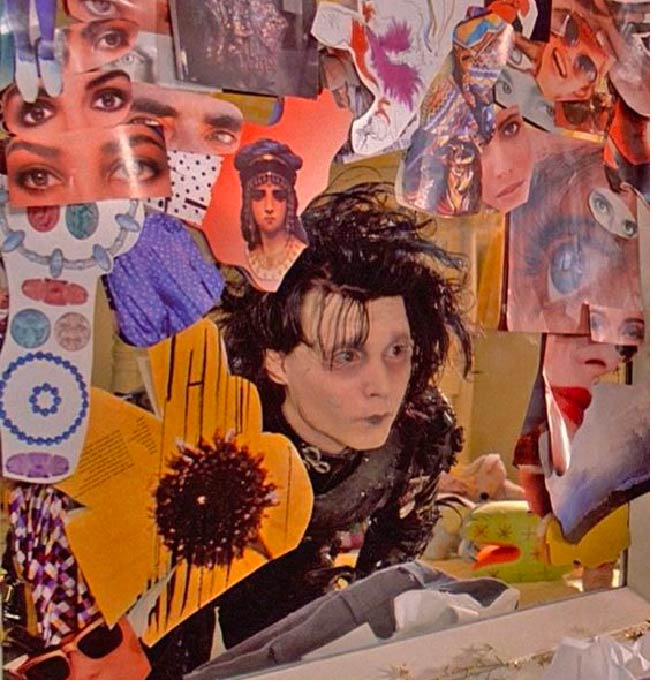
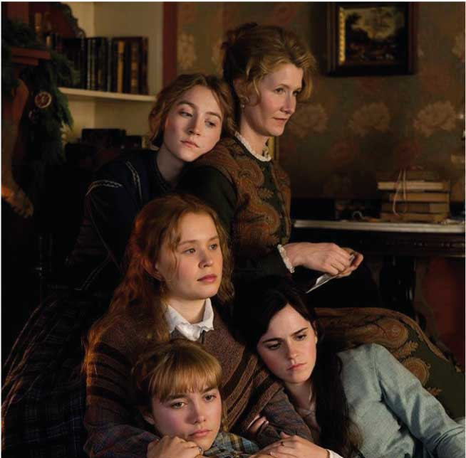
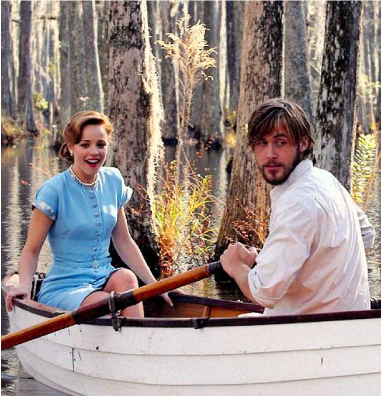

Edward Scissorhands
On December 6, 1990, Tim Burton's Edward Scissorhands premiered in Los Angeles. The film brought the first popularity to the lead actor Johnny Depp and caused a positive reaction from critics.This is the fourth joint film by director Tim Burton and composer Danny Elfman. Burton later said that although it was not his best film, it was his favorite.The film begins with a crazy inventor creating a young man, but dies before he can finish it. Therefore, the guy lives in an old mansion, sporting sharp scissors for hands and scars where he wanted to scratch. A kind woman finds a poor fellow and helps him to integrate into human society.Then all the adventures of Edward, who did not know human life before, begin. An interesting fact is that the director took the idea for the film and was inspired by his children's drawing, which depicted a thin man with blades instead of fingers. And one more thing that inspired the direction was his hometown on which he founded the city in which all the events of the film take place.

Little Women
This is one of my favorite movies so i just can't help but include it in the list of best romantic films. Louise May Olcott's famous novel "Little Women" has been screened many times since 1917, and here she decided to take the young blood of Hollywood in the person of Greta Gerwig to create fresh and bright classics for the present and a new generation of young people who change the world and create a better future. The film shows how in a small but picturesque town in the northern United States in the midst of the Civil War in a modest house of the March family live four sisters. Their names are Meg, Joe, Amy and Beth, and they are never boring. They are four little women in this big world, and that's their story. The March sisters from her "Little Women" experience all the difficulties of growing up on the big screen, face social discrimination, fight poverty and heart problems, but are always inspiring as they continue to search for themselves and their dreams, creatively find a way out of any situation rejoice in the little things.

The Notebook
Filmed for $ 29 million, the sentimental melodrama grossed over 115 million at the box office in 2004 and has become one of the exemplary films of its genre. The Diary of Remembrance is based on the novel by Nicholas Sparks. The film was in development for a long time and at various stages Steven Spielberg and Tom Cruise looked closely at it, but in the end the drama went to Nick Cassavetes. The story begins with Interesting Old Man (James Garner) reading a manuscript of a love story to a beautiful old woman (Gina Rowlands) every day in a nursing home. The novel is quite traditional, but again of high quality: neither the relationship, nor the words are stupid and at the same time typical. Most of the film is an adaptation of this manuscript. In 1940, in the countryside of the American South, the young son of a poor farmer (Ryan Gosling) and the young daughter of wealthy aristocrats (Rachel McAdams) met. They had a violent summer passion, and then her mother (Joan Allen) separated them forever.